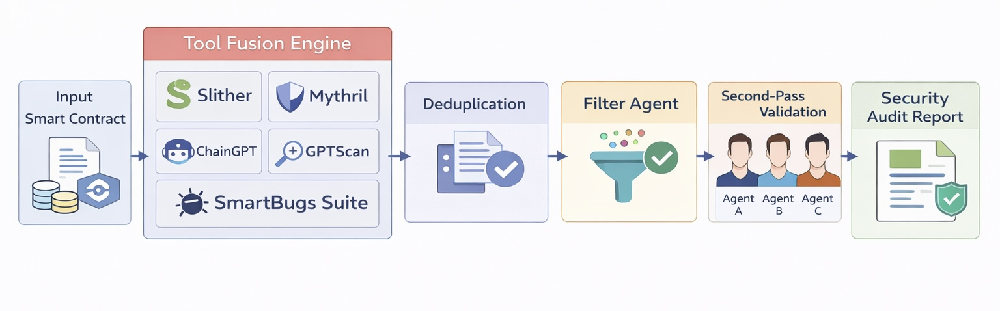
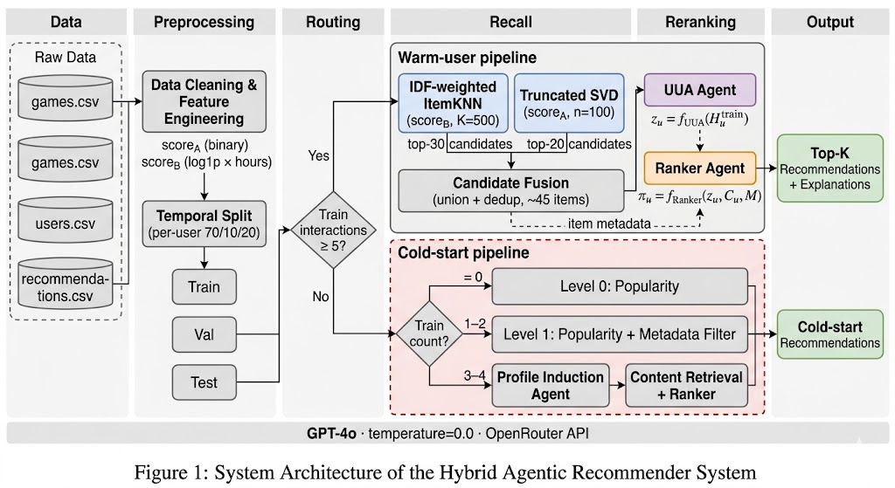
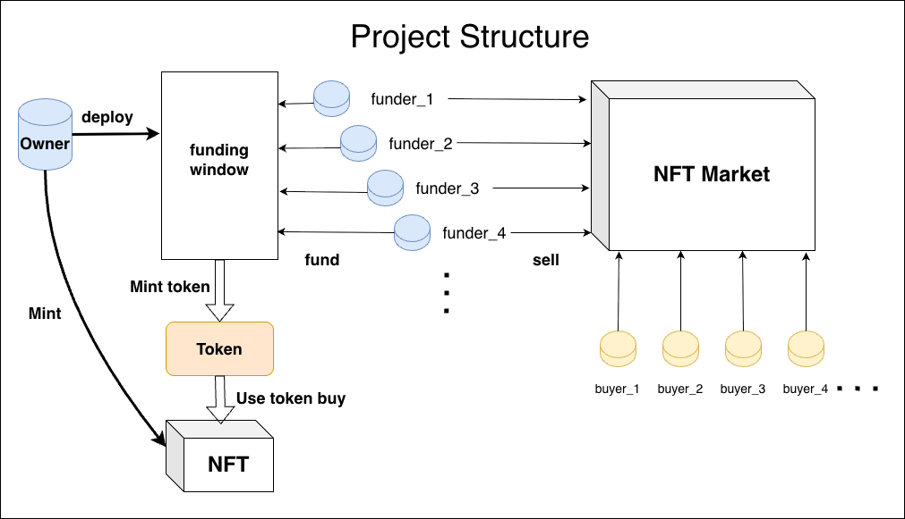
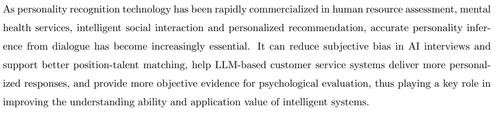

I am a Master's student in Data Science at Lingnan University , with a technical foundation in Electronic Information Engineering. My expertise lies in leveraging Advanced AI (LLMs & RAG) and Data Analytics to solve complex problems, while maintaining a strong interest in Blockchain Security. I am currently exploring Multimodal RAG frameworks to enhance information retrieval across diverse data types.
Education:
- Lingnan University | Master of Data Science | 2025 - Present
- Lingnan Normal University | B.Eng. in Electronic Information Engineering | 2021 - 2025
Core Strengths:
- Advanced AI & NLP: Experienced in LLM personality analysis and currently researching Multimodal RAG architectures for enhanced retrieval.
- Large-scale Data Analytics: Proficient in processing and visualizing massive datasets (e.g., 41M+ records) to derive actionable insights].
- Automated Workflow Engineering: Skilled in building agentic pipelines using n8n and Python to bridge AI models with real-world applications.
- Web3 Security & Development: Deep understanding of Solidity and automated smart contract vulnerability detection.
Skill Set
Data Science & AI
- Python (Pandas, NumPy, Scikit-learn)
- Machine Learning & NLP
- Multimodal RAG Research
- Data Visualization (Matplotlib, Seaborn)
Engineering & Web3
- Solidity & Smart Contracts
- Agentic Systems (UUA/Ranker)
- Smart Contract Security
- Workflow Automation (n8n)
Tools & Infrastructure
- SQL & Database Management
- Hardhat & Ethers.js
- Git / GitHub & Linux
- Chainlink Oracle Integration
Featured Projects

AI-Powered Security Auditing
Problem: Identifying complex logical flaws in DeFi contracts at scale.
Data: ~1,000 smart contracts and 10,000+ identified syntax/logic vulnerabilities.
Approach: Integrated GPT-4o APIs with traditional tools (Slither, Mythril) into an automated n8n pipeline.
Outcome: Achieved >90% recall and significantly reduced false positives.

Steam Data Analysis & Recommender
Problem: Overcoming data sparsity in massive recommendation scenarios.
Data: Analyzed a public dataset of 41 million Steam user interactions.
Approach: Hybrid system using ItemKNN for recall and LLM-based agents for semantic reranking.
Outcome: Validated the effectiveness of "CF Recall + LLM Reranking" architecture.

Web3 NFT & Crowdfunding Ecosystem
Problem: Building transparent and secure decentralized financial tools.
Approach: Developed a Solidity-based ecosystem with time-locked protocols and Chainlink oracles.
Outcome: Implemented robust unit testing and security features like ReentrancyGuard.

LLM Personality Bias Analysis
Problem: Evaluating the capability of LLMs to infer human personality traits.
Data: Dialogue datasets containing complex linguistic patterns.
Approach: Applied NLP techniques to process datasets and analyze model correlations.
Outcome: Visualized linguistic patterns corresponding to different personality types.
Resume / CV
My CV highlights my journey in Data Science and my technical project experiences.
{kind=link}
{kind=link}
{kind=link}
{kind=link}